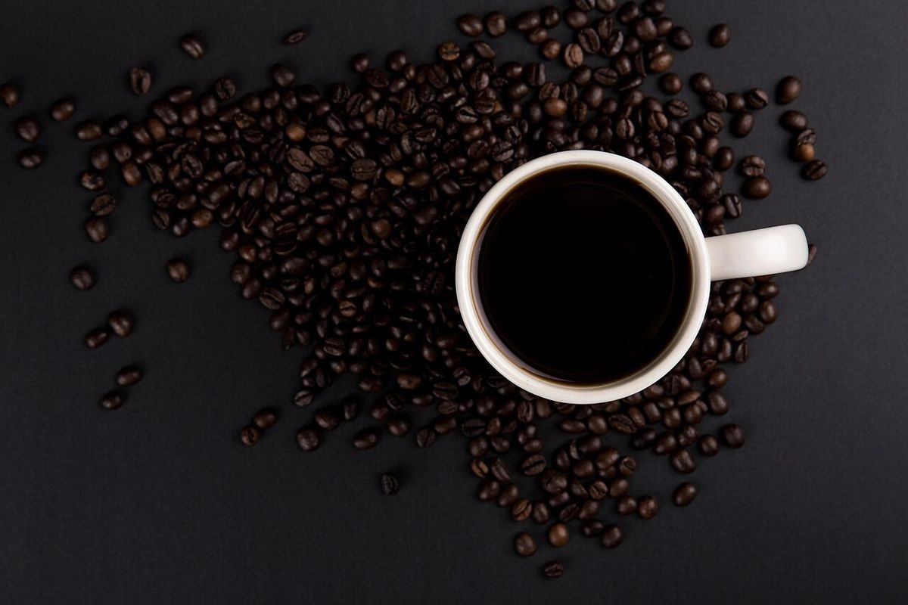

制作側の連想
フードプロセッサーを、部位ごとに分けてみる
このサイトは、台所のフードプロセッサーを分解して並べた図に見立てて作りました。六つの部位に番号をふり、上の図と並べています。制作側の連想で、お店の理念・由来とは無関係です。実際の機器の仕様を示すものでもありません。
凡例
六つの部位
- 1本体(モーター部)土台になる箱。中にモーターが入り、容器を載せて回す力を出す部分。
- 2ボウル材料を入れる透明な容器。底の中央に軸を通す穴がある。
- 3ブレード(刃)ボウルの軸に差す、二枚羽の金属の刃。回転して刻む部分。
- 4ふたボウルに被せる蓋。回している間に中身が飛び出さないよう押さえる。
- 5フィードチューブふたに立ち上がる筒。回しながら材料を足すための投入口。
- 6プッシャーフィードチューブに差し込む棒。材料を刃の方へ押し込む。


ギャラリー(イメージ)
パンとコーヒー豆の写真


写真はパン・コーヒー・紅茶のイメージです。お店のものではなく、お店で提供している商品を示すものでもありません。